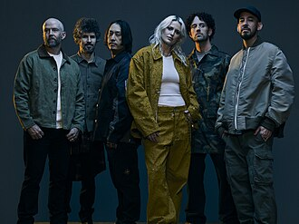
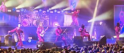
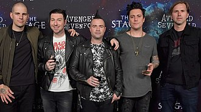
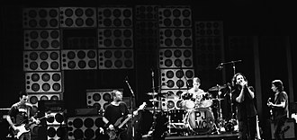
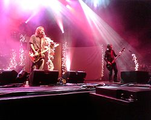
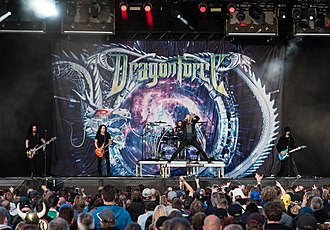

Artistas
Linkin Park

Linkin Park é uma banda de rock dos Estados Unidos, formada em 1996 na Califórnia, conhecida por seu sucesso internacional iniciado com o álbum Hybrid Theory (2000). A banda, que passou por mudanças na formação, incluindo a perda do vocalista Chester Bennington em 2017, retornou em 2024 com novos membros. Ao longo de sua carreira, explorou diversos estilos musicais, do nu metal ao eletrônico, lançando oito álbuns de estúdio e vendendo mais de 100 milhões de cópias mundialmente. Reconhecida como uma das maiores bandas do século XXI, Linkin Park acumula prêmios importantes e ampla influência no cenário musical global...More
Slipknot

Slipknot é uma banda norte-americana de metal formada em 1995 em Des Moines, Iowa, conhecida pelo nu metal, pelas máscaras dos integrantes e shows intensos. Com uma formação que passou por mudanças após a morte do baixista Paul Gray e a saída de membros, a banda lançou vários álbuns de sucesso, como Slipknot (1999), Iowa (2001) e We Are Not Your Kind (2019), alcançando o topo das paradas globais e vendendo cerca de 30 milhões de cópias até 2015. Reconhecida por liderar grandes festivais e por seu Grammy em 2006, Slipknot é uma das principais referências do metal contemporâneo...More
Three Days Grace
Three Days Grace é uma banda canadense de rock formada em 1992, originalmente chamada "Groundswell", que se destacou por seu som intenso e letras reflexivas. Após uma pausa, o grupo se reestruturou em 1997 e adotou o nome atual, inspirado na ideia de ter "três dias para mudar algo na vida". Entre 2003 e 2019, emplacou 15 singles no topo da parada Billboard Mainstream Rock. Em 2024, anunciou o retorno do vocalista original Adam Gontier, que passou a dividir os vocais com Matt Walst...More
Avenged Sevenfold

Avenged Sevenfold, fundada em 1999 na Califórnia, é uma banda norte-americana de heavy metal composta por M. Shadows, Zacky Vengeance, Synyster Gates, Johnny Christ e Brooks Wackerman. Inicialmente focada no metalcore, a banda evoluiu seu estilo a partir do álbum City of Evil, consolidando-se como uma das maiores e mais influentes do heavy metal contemporâneo...More
System Of A Down
System of a Down é uma banda armênio-americana de nu metal formada em 1994 na Califórnia, composta por Serj Tankian, Daron Malakian, Shavo Odadjian e John Dolmayan. Com cinco álbuns de estúdio, três deles estreando no topo da Billboard 200, a banda é reconhecida por seu sucesso comercial e prêmios, incluindo um Grammy em 2006 por "B.Y.O.B.". Após um hiato entre 2006 e 2010, lançou duas músicas em 2020, mas não lançou álbuns completos desde 2005, tendo vendido mais de 12 milhões de discos mundialmente...More
Pearl Jam

Pearl Jam é uma banda norte-americana de rock formada em 1990 em Seattle, composta por Eddie Vedder, Jeff Ament, Stone Gossard, Mike McCready e o baterista Matt Cameron. Conhecida por seu álbum de estreia *Ten* e por sua postura crítica à indústria musical, incluindo boicotes e recusa a videoclipes, Pearl Jam é considerada uma das bandas mais influentes dos anos 1990, tendo vendido cerca de 60 milhões de álbuns mundialmente e sido incluída no Rock and Roll Hall of Fame em 2017...More
Deftones
Deftones é uma banda americana de metal alternativo formada em 1988 em Sacramento, Califórnia, atualmente composta por Chino Moreno, Stephen Carpenter, Sergio Vega, Frank Delgado e Abe Cunningham. Originalmente, o baixista era Chi Cheng, que ficou em coma após um acidente em 2008 e faleceu em 2013 após uma longa recuperação...More
Seether

Seether é uma banda sul-africana de post-grunge, originalmente chamada Saron Gas, que mudou de nome em 2002 ao lançar seu álbum de estreia *Disclaimer*. Atualmente, a banda é contratada pela gravadora Wind-up Records...More
Dragon Force

DragonForce é uma banda inglesa de power metal formada em 1999 após o fim da banda Demoniac, inicialmente chamada DragonHeart, mas que mudou de nome em 2001 para DragonForce devido a conflitos com um filme e uma banda brasileira. Conhecida por seu estilo acelerado e técnico, a banda foi indicada ao Grammy em 2008 na categoria Melhor Performance de Metal pela canção "Heroes of Our Time", do álbum *Ultra Beatdown*...More
My Chemical Romance
My Chemical Romance (MCR) é uma influente banda americana de rock formada em 2001 em Newark, Nova Jérsia, composta por Gerard Way, Ray Toro, Frank Iero e Mikey Way. Conhecida por mesclar elementos de pop-punk e rock conceitual, a banda alcançou grande sucesso com álbuns como *Three Cheers for Sweet Revenge* (2004) e *The Black Parade* (2006), cujo single "Welcome to the Black Parade" liderou as paradas britânicas. Após uma pausa entre 2013 e 2019, quando anunciaram retorno e lançaram o single "The Foundations of Decay" em 2022, o MCR mantém uma base sólida de fãs e é considerada uma das bandas mais marcantes dos anos 2000...More